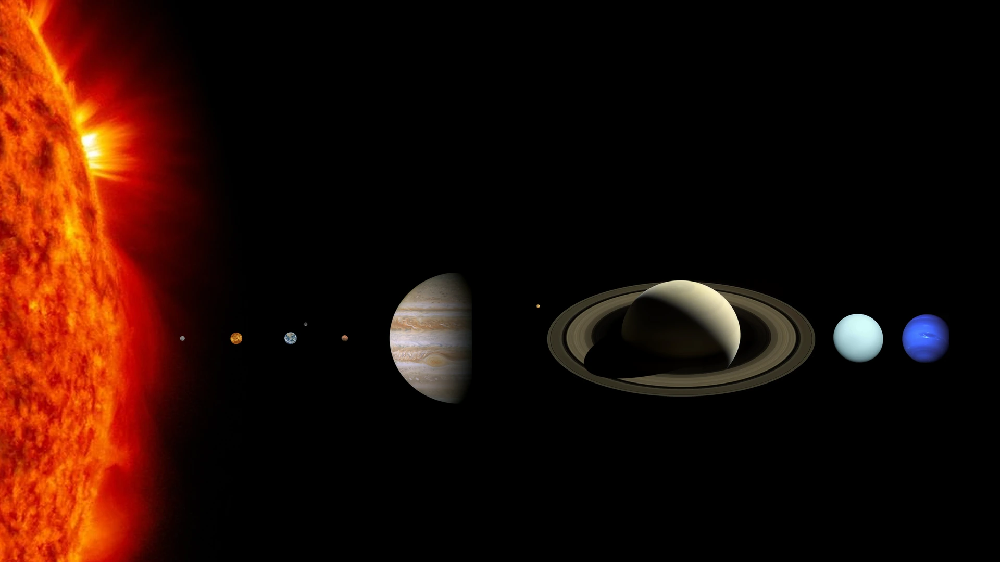
Eleven bodies, one table
The Sun, the eight planets and the Moon, each with the size, spin, gravity, field and atmosphere the renderer works from.
- Mercury
- Venus
- Earth
- Mars
- Jupiter
- Saturn
- Uranus
- Neptune
- Moon
- Io
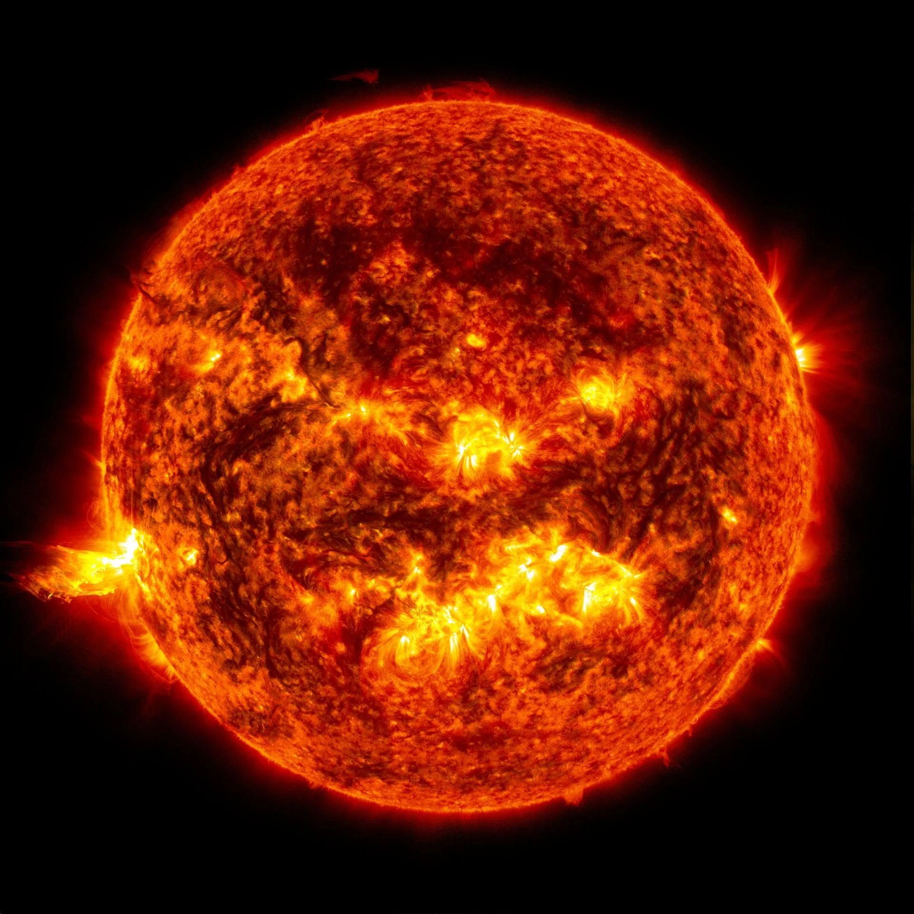
The Sun
A G2V main-sequence star; luminosity 3.828×10²⁶ W. Rotates differentially (~25 d equator, ~34 d poles). Surface granulation, sunspots, an X-ray corona at ~1–3 MK, and a continuous solar wind.
- Radius
- 695,700 km
- Mass
- 1.9885×10³⁰ kg332,950 Earths
- Surface gravity
- 274.0 m/s²
- Rotation
- 25.38 dCarrington sidereal
- Axial tilt
- 7.25°
- Effective temperature
- 5,772 K5,499 °C
- Composition
- H₂ plasma73% H, 25% He by mass
- Escape velocity
- 617.5 km/s
Full disc in extreme ultraviolet. NASA/SDO.
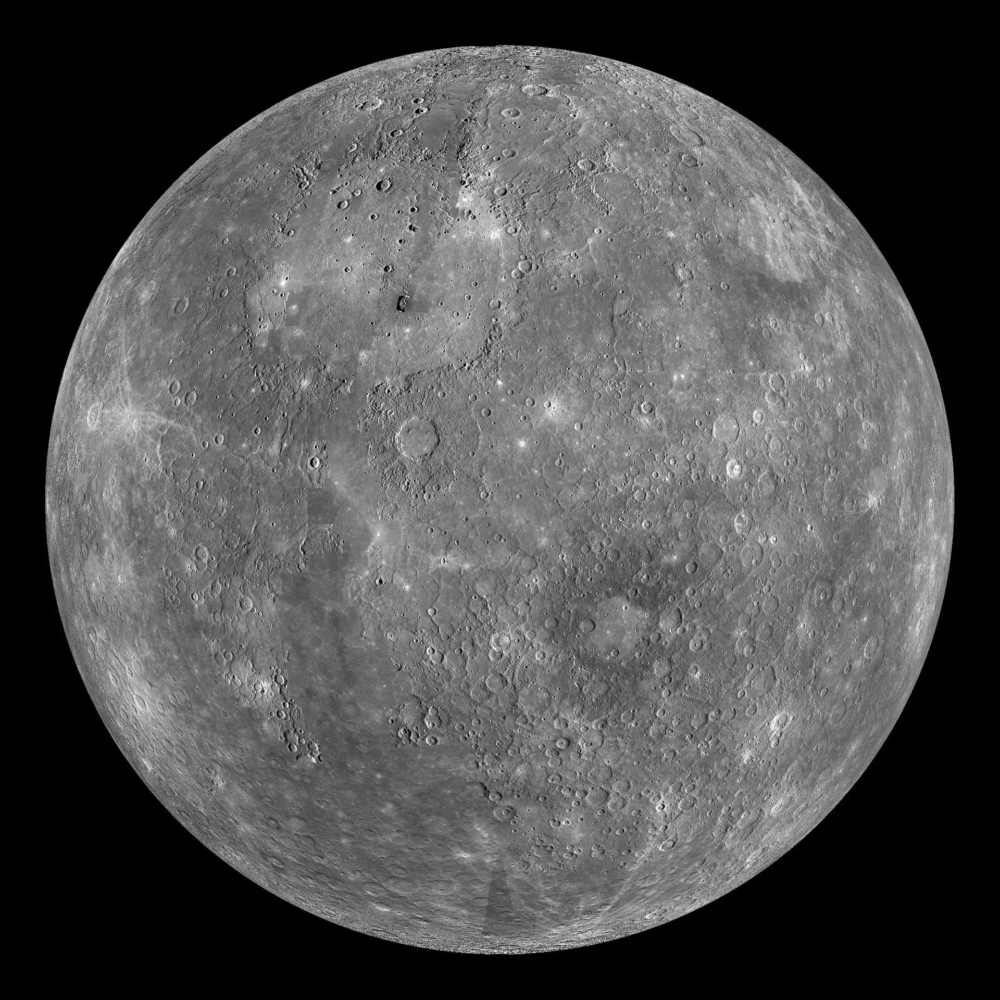
Mercury
Airless, heavily cratered, 3:2 spin–orbit resonance. A weak global dipole (surface field ~1% of Earth's, dipole moment ~0.06%) sustains a small magnetosphere.
- Equatorial radius
- 2,439.7 km
- Mass
- 3.301×10²³ kg0.055 Earths
- Surface gravity
- 3.70 m/s²
- Rotation
- 58.65 d3:2 with its year
- Axial tilt
- 0.034°
- Mean temperature
- 440 K167 °C
- Atmosphere
- Trace exosphereO, Na, H, He, K
- Magnetic field
- 0.0006× Earth's dipole
Global mosaic. NASA/Johns Hopkins APL/Carnegie Institution.
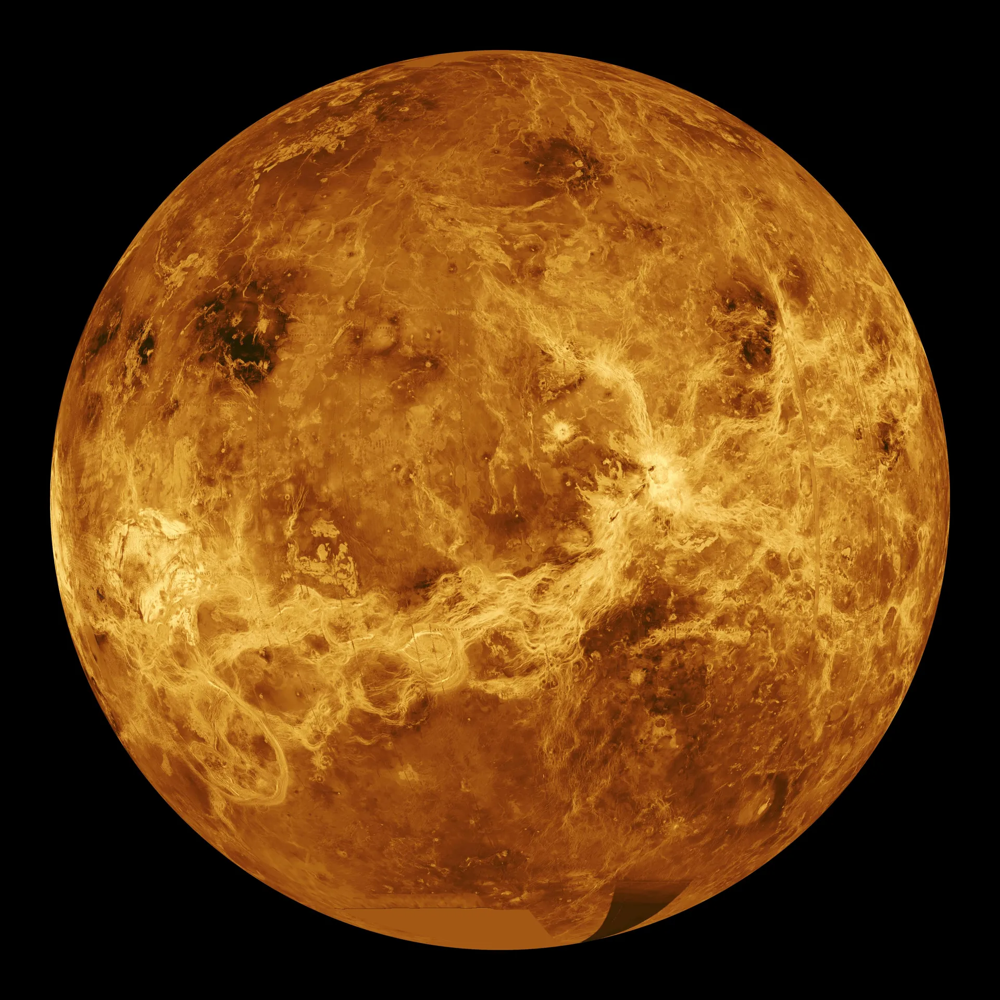
Venus
A runaway greenhouse: 92 bar of CO₂, 737 K surface. Rotates retrograde once per 243 days, slower than its year. No intrinsic magnetic field (only an induced one).
- Equatorial radius
- 6,051.8 km
- Mass
- 4.867×10²⁴ kg0.815 Earths
- Surface gravity
- 8.87 m/s²
- Rotation
- 243.02 dretrograde
- Axial tilt
- 177.36°effectively upside down
- Mean temperature
- 737 K464 °C
- Atmosphere
- 92 bar96.5% CO₂, 3.5% N₂
- Magnetic field
- None intrinsicinduced only
Magellan radar surface on a simulated globe, simulated colour. NASA/JPL.
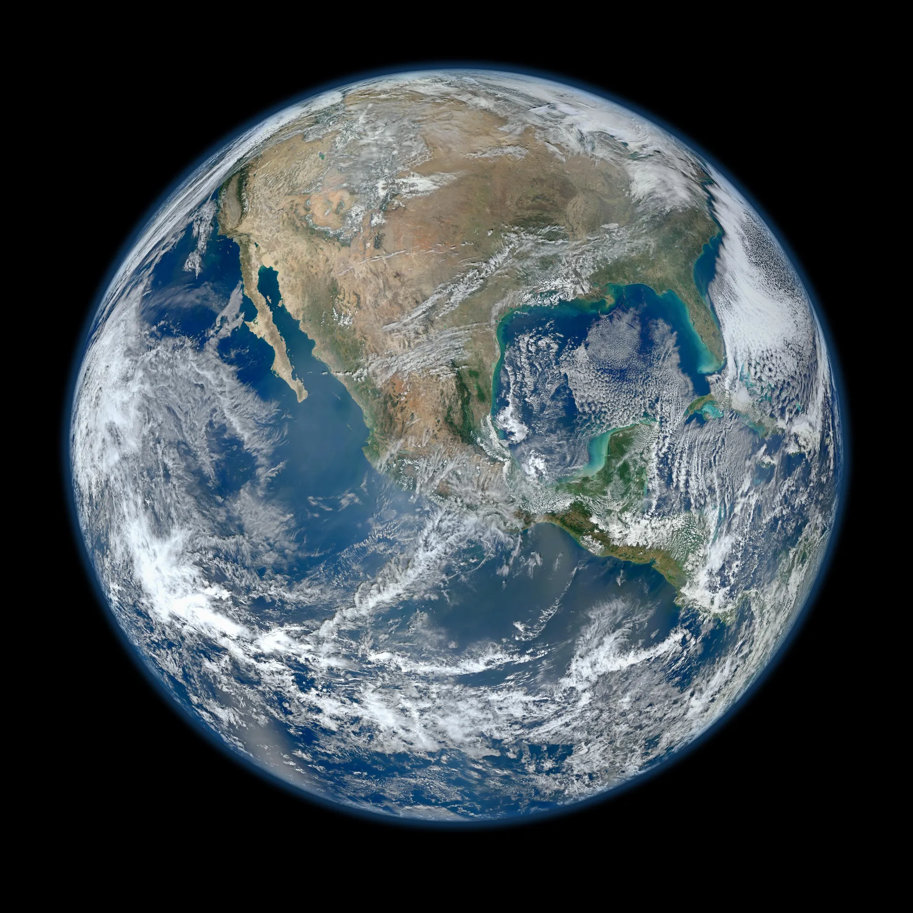
Earth
Liquid-water oceans, a nitrogen–oxygen atmosphere, and a strong dipole field (the reference, 8×10²² A·m²) driving a protective magnetosphere and aurorae.
- Equatorial radius
- 6,378.1 kmpolar 6,356.8 km
- Mass
- 5.9722×10²⁴ kgthe reference
- Surface gravity
- 9.80 m/s²
- Rotation
- 23.9345 hsidereal
- Axial tilt
- 23.44°precessing over ~25,770 y
- Mean temperature
- 288 K15 °C
- Atmosphere
- 1.0 bar78% N₂, 21% O₂, 1% Ar
- Magnetic field
- 8×10²² A·m²the reference dipole
Blue Marble 2012, composite from Suomi NPP. NASA.
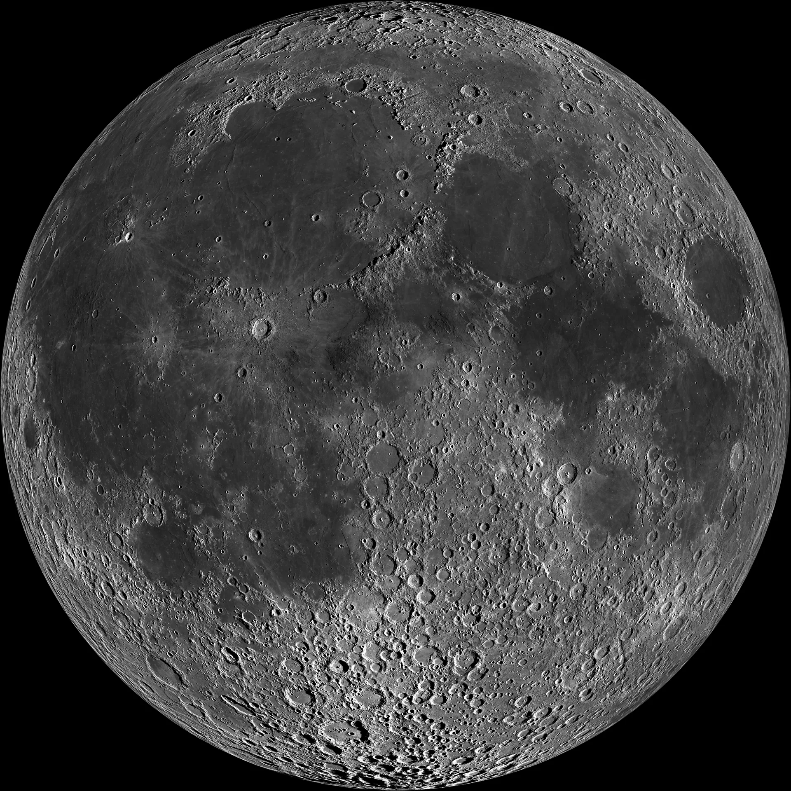
The Moon
Earth's tidally-locked companion: dark basaltic maria, bright cratered highlands, no atmosphere or global field. Libration (7.9° in longitude, 6.7° in latitude) exposes 59% of the surface over time.
- Equatorial radius
- 1,737.4 km
- Mass
- 7.346×10²² kg0.0123 Earths
- Surface gravity
- 1.62 m/s²
- Rotation
- 27.322 dsynchronous
- Axial tilt
- 6.68°
- Mean temperature
- 250 K−23 °C
- Atmosphere
- Tenuous exosphereHe, Ar, Na
- Magnetic field
- None
Near side, Lunar Reconnaissance Orbiter mosaic, 2010. NASA/GSFC/Arizona State University.
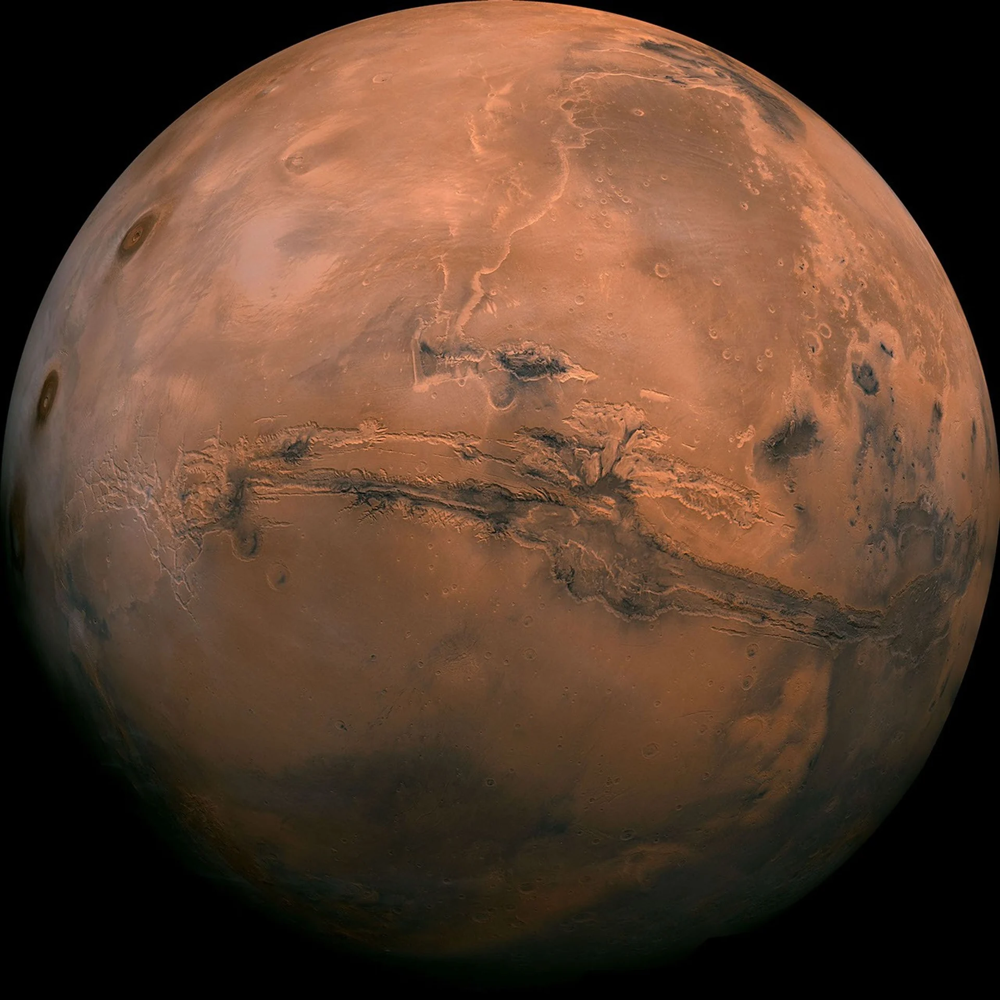
Mars
Thin CO₂ air, polar CO₂/water ice caps, iron-oxide dust. No global field today, only crustal remanent magnetism in the southern highlands.
- Equatorial radius
- 3,396.2 kmpolar 3,376.2 km
- Mass
- 6.417×10²³ kg0.107 Earths
- Surface gravity
- 3.71 m/s²
- Rotation
- 24.6229 h
- Axial tilt
- 25.19°
- Mean temperature
- 210 K−63 °C
- Atmosphere
- 0.0064 bar95% CO₂, 2.7% N₂
- Magnetic field
- None globalcrustal remanence
Global view centred on Valles Marineris. NASA/JPL-Caltech.
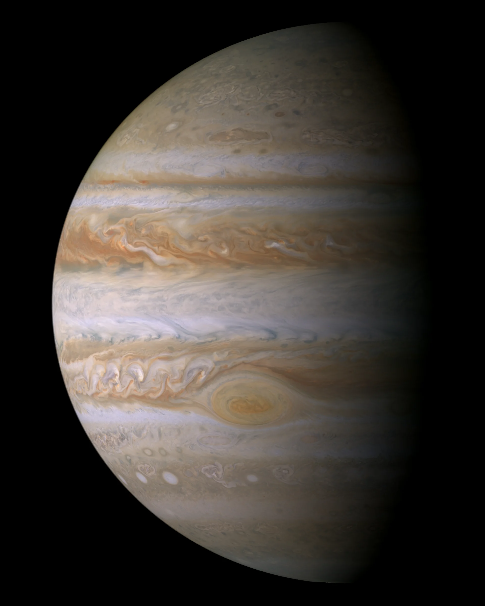
Jupiter
The largest planet, visibly oblate (flattening 6.5%). Fastest rotation (9.9 h) drives zonal bands and the centuries-old Great Red Spot. A colossal magnetosphere ~20,000× Earth's dipole.
- Equatorial radius
- 71,492 kmpolar 66,854 km
- Mass
- 1.898×10²⁷ kg318 Earths
- Surface gravity
- 24.79 m/s²
- Rotation
- 9.9259 hthe fastest
- Axial tilt
- 3.13°
- Mean temperature
- 165 K−108 °C
- Atmosphere
- 90% H₂, 10% HeNH₃/H₂O clouds
- Magnetic field
- 20,000× Earth's dipole
True-colour mosaic, Cassini, 29 December 2000. NASA/JPL/Space Science Institute.
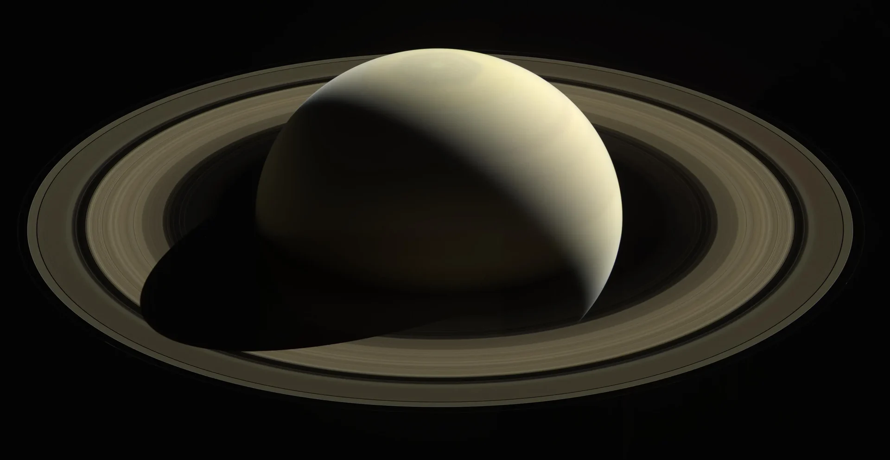
Saturn
Less dense than water. Rings of ice and rock from 1.2 to 2.3 Saturn-radii, split by the Cassini Division. The most oblate planet, flattened 9.8%.
- Equatorial radius
- 60,268 kmpolar 54,364 km
- Mass
- 5.683×10²⁶ kg95 Earths
- Density
- 0.687 g/cm³it would float
- Rotation
- 10.656 h
- Axial tilt
- 26.73°
- Rings
- 74,500 to 136,780 kmfrom centre; dark gap: Cassini Division
- Mean temperature
- 134 K−139 °C
- Magnetic field
- 580× Earth's dipole
Cassini mosaic, 2016. NASA/JPL-Caltech/Space Science Institute. Ring profile: NASA/Cassini photometry.
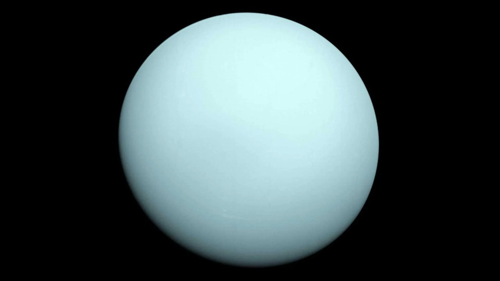
Uranus
Tipped 98°: it rolls along its orbit on its side. Methane absorbs red light, giving its cyan hue. A field tilted 59° from the spin axis and offset from centre.
- Equatorial radius
- 25,559 kmpolar 24,973 km
- Mass
- 8.681×10²⁵ kg14.5 Earths
- Surface gravity
- 8.69 m/s²
- Rotation
- 17.24 hretrograde
- Axial tilt
- 97.77°on its side
- Mean temperature
- 76 K−197 °C
- Atmosphere
- 83% H₂, 15% He, 2% CH₄
- Magnetic field
- 50× Earth'stilted 59°
Voyager 2, 1986. NASA/JPL-Caltech.
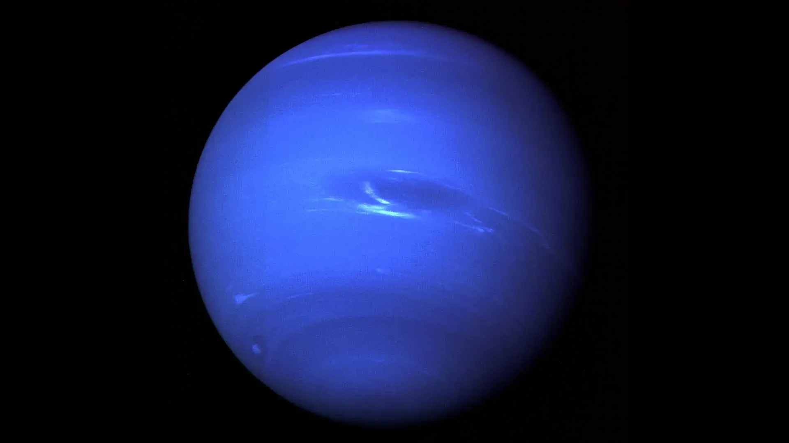
Neptune
Deepest blue of the giants, with the strongest winds in the solar system (~2,000 km/h) and transient dark storms. A field tilted 47° and offset.
- Equatorial radius
- 24,764 kmpolar 24,341 km
- Mass
- 1.024×10²⁶ kg17.1 Earths
- Surface gravity
- 11.15 m/s²
- Rotation
- 15.9663 hIAU 2015
- Axial tilt
- 28.32°
- Mean temperature
- 72 K−201 °C
- Atmosphere
- 80% H₂, 19% He, 1.5% CH₄
- Magnetic field
- 27× Earth'stilted 47°
Voyager 2, 1989. NASA/JPL-Caltech.
The moons
Only two of them have been photographed close enough to fill a frame from a spacecraft in orbit around their primary. One is ours; the other is the most volcanic body in the solar system.
Continue to The Moons
Where the numbers come from
Every figure here is time-independent: size, shape, spin, gravity, field and atmosphere. Positions come from the ephemeris engine, not from this table.
- Physical data
- NASA Planetary Fact Sheets, nssdc.gsfc.nasa.gov
- Spin and pole
- IAU Working Group on Cartographic Coordinates and Rotational Elements 2015 — Archinal et al. 2018
- Surface maps
- Solar System Scope (CC-BY 4.0), from NASA MESSENGER, Magellan, Viking, MGS/MOLA, Cassini, Juno, Voyager 2, LRO and Clementine
- Earth and Sun
- NASA Blue Marble 2012, Suomi NPP (PIA18033); NASA/SDO HMI continuum (both public domain)
- Venus, Moon, Jupiter
- Magellan globe PIA00104, NASA/JPL; LRO near-side mosaic, NASA/GSFC/Arizona State University; Cassini portrait PIA04866, NASA/JPL/Space Science Institute
- Io
- NASA / JPL-Caltech / SwRI / MSSS, processed by a JunoCam citizen scientist